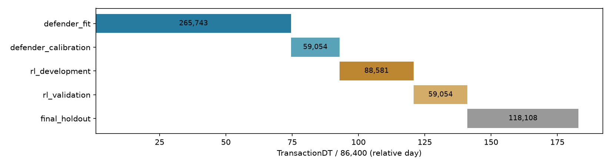
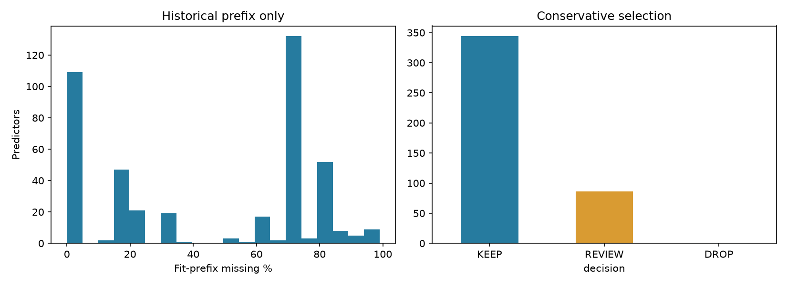

Original PostgreSQL export, fit-prefix audit, two fresh model fits, calibration, independent development/validation evaluation, paired 10,000-decision Court replays, synthetic learner update, regression tests and reports executed. No full PPO/DQN and no source table modifications.
| table | rows | column_count |
|---|---|---|
| public.train_merge | 590540 | 434 |
| public.test_merge | 506691 | 433 |
| public.train_clean | 590540 | 421 |
| public.test_clean | 506691 | 420 |
Original export and cleaned projection verify all values, NULLs and ID/time alignment. Protected previous artifacts remain byte-identical.

Selection and mappings: Defender Fit only. Calibration: subsequent calibration window only. RL Development: future policy optimization. RL Validation: evaluation/model-policy selection. Final holdout reserved from NEW tuning; historically baseline-evaluated.
Original predictors: 431. New version: cleaned_prefix_430. Missingness >90%: 12. Correlation pairs |r|≥.98: 49. Review components: 26. All-NULL: 0; constant non-NULL: 1; near-constant: 12. These categories may overlap.

| feature | unique_count | missing_percentage | decision | reason |
|---|---|---|---|---|
| v107 | 1 | 0.000000 | DROP | Complete constant in fitting prefix |
High correlations and high missingness alone never trigger removal. Correlation groups may contain noncorrelated endpoints; they are not equivalence classes. All non-DROP features are retained, including REVIEW.
| decision | DROP | KEEP | REVIEW |
|---|---|---|---|
| group | |||
| C | 0 | 4 | 10 |
| D | 0 | 9 | 6 |
| M | 0 | 9 | 0 |
| ProductCD | 0 | 1 | 0 |
| TransactionAmt | 0 | 1 | 0 |
| V | 1 | 279 | 59 |
| addr | 0 | 2 | 0 |
| card | 0 | 6 | 0 |
| dist | 0 | 1 | 1 |
| email_domain | 0 | 2 | 0 |
| id | 0 | 28 | 10 |
| other_identity_or_transaction | 0 | 2 | 0 |
| dataset_version | predictor_count | defender_fit_rows | calibration_rows | evaluation_window | rows | AP | ROC_AUC | recall | precision | FPR | Brier | TN | FP | FN | TP | mean_business_reward | training_duration_seconds | model_artifact_path | calibration_method |
|---|---|---|---|---|---|---|---|---|---|---|---|---|---|---|---|---|---|---|---|
| original_431 | 431 | 265743 | 59054 | rl_development | 88581 | 0.503145 | 0.864041 | 0.472152 | 0.579861 | 0.014228 | 0.025382 | 83834 | 1210 | 1867 | 1670 | 0.645104 | 222.202595 | /Users/macrisen/Desktop/credit card fraud detect/models/temporal_defender/original | isotonic |
| original_431 | 431 | 265743 | 59054 | rl_validation | 59054 | 0.481037 | 0.867104 | 0.452693 | 0.569250 | 0.012387 | 0.022967 | 56287 | 706 | 1128 | 933 | 0.669337 | 222.202595 | /Users/macrisen/Desktop/credit card fraud detect/models/temporal_defender/original | isotonic |
| cleaned_prefix_430 | 430 | 265743 | 59054 | rl_development | 88581 | 0.503145 | 0.864041 | 0.472152 | 0.579861 | 0.014228 | 0.025382 | 83834 | 1210 | 1867 | 1670 | 0.645104 | 233.892880 | /Users/macrisen/Desktop/credit card fraud detect/models/temporal_defender/cleaned | isotonic |
| cleaned_prefix_430 | 430 | 265743 | 59054 | rl_validation | 59054 | 0.481037 | 0.867104 | 0.452693 | 0.569250 | 0.012387 | 0.022967 | 56287 | 706 | 1128 | 933 | 0.669337 | 233.892880 | /Users/macrisen/Desktop/credit card fraud detect/models/temporal_defender/cleaned | isotonic |
Metrics use calibrated predictions at strict p>1/6. AP is average precision, not trapezoidal PR area. Identical tuning budgets: max2000 rounds, 100-round early stopping inside fit, seed42, 4 threads. Calibration is selected/refitted inside calibration only. No RL performance improvement is claimed.
Utility derivation: FLAG=15p−5, APPROVE=1−21p; threshold=1/6.
| version | window | bin | count | mean_probability | fraud_rate |
|---|---|---|---|---|---|
| original | rl_development | 0 | 84196 | 0.015106 | 0.019704 |
| original | rl_development | 1 | 1616 | 0.121999 | 0.141708 |
| original | rl_development | 2 | 636 | 0.248867 | 0.215409 |
| original | rl_development | 3 | 300 | 0.357143 | 0.323333 |
| original | rl_development | 4 | 253 | 0.467334 | 0.450593 |
| original | rl_development | 5 | 361 | 0.557166 | 0.631579 |
| original | rl_development | 6 | 2 | 0.668705 | 1.000000 |
| original | rl_development | 7 | 184 | 0.725244 | 0.777174 |
| original | rl_development | 8 | 367 | 0.858351 | 0.850136 |
| original | rl_development | 9 | 666 | 0.963914 | 0.924925 |
| original | rl_validation | 0 | 56531 | 0.014316 | 0.017778 |
| original | rl_validation | 1 | 952 | 0.121470 | 0.141807 |
| original | rl_validation | 2 | 366 | 0.245617 | 0.265027 |
| original | rl_validation | 3 | 161 | 0.357403 | 0.273292 |
| original | rl_validation | 4 | 134 | 0.467603 | 0.425373 |
| original | rl_validation | 5 | 217 | 0.557273 | 0.589862 |
| original | rl_validation | 6 | 2 | 0.679975 | 0.500000 |
| original | rl_validation | 7 | 107 | 0.724957 | 0.738318 |
| original | rl_validation | 8 | 192 | 0.855446 | 0.828125 |
| original | rl_validation | 9 | 392 | 0.967323 | 0.908163 |
| cleaned | rl_development | 0 | 84196 | 0.015106 | 0.019704 |
| cleaned | rl_development | 1 | 1616 | 0.121999 | 0.141708 |
| cleaned | rl_development | 2 | 636 | 0.248867 | 0.215409 |
| cleaned | rl_development | 3 | 300 | 0.357143 | 0.323333 |
| cleaned | rl_development | 4 | 253 | 0.467334 | 0.450593 |
| cleaned | rl_development | 5 | 361 | 0.557166 | 0.631579 |
| cleaned | rl_development | 6 | 2 | 0.668705 | 1.000000 |
| cleaned | rl_development | 7 | 184 | 0.725244 | 0.777174 |
| cleaned | rl_development | 8 | 367 | 0.858351 | 0.850136 |
| cleaned | rl_development | 9 | 666 | 0.963914 | 0.924925 |
| cleaned | rl_validation | 0 | 56531 | 0.014316 | 0.017778 |
| cleaned | rl_validation | 1 | 952 | 0.121470 | 0.141807 |
| cleaned | rl_validation | 2 | 366 | 0.245617 | 0.265027 |
| cleaned | rl_validation | 3 | 161 | 0.357403 | 0.273292 |
| cleaned | rl_validation | 4 | 134 | 0.467603 | 0.425373 |
| cleaned | rl_validation | 5 | 217 | 0.557273 | 0.589862 |
| cleaned | rl_validation | 6 | 2 | 0.679975 | 0.500000 |
| cleaned | rl_validation | 7 | 107 | 0.724957 | 0.738318 |
| cleaned | rl_validation | 8 | 192 | 0.855446 | 0.828125 |
| cleaned | rl_validation | 9 | 392 | 0.967323 | 0.908163 |
| action_type | feature_category | constraint_status | permitted_range | reward | queries | validity_status | limitation | eligible_fraud | decision | status | reward_test |
|---|---|---|---|---|---|---|---|---|---|---|---|
| modified_then_stop | MUTABLE quantity; DEPENDENT total | VALID_MODIFIED | quantity [1,10]; displacement <=2; Box(1); zero STOP | 0.500000 | 1 | SYNTHETIC_ONLY | No IEEE-CIS causal validity | True | APPROVE | VALID_MODIFIED | PASS |
| identity_stop | MUTABLE quantity; DEPENDENT total | VALID_UNCHANGED | quantity [1,10]; displacement <=2; Box(1); zero STOP | -1.000000 | 1 | SYNTHETIC_ONLY | No IEEE-CIS causal validity | True | FLAG | VALID_UNCHANGED | PASS |
| out_of_bounds | MUTABLE quantity; DEPENDENT total | INVALID_ACTION | quantity [1,10]; displacement <=2; Box(1); zero STOP | -2.000000 | 0 | SYNTHETIC_ONLY | No IEEE-CIS causal validity | True | NaN | INVALID_ACTION | PASS |
| over_budget | MUTABLE quantity; DEPENDENT total | INVALID_ACTION | quantity [1,10]; displacement <=2; Box(1); zero STOP | -3.000000 | 0 | SYNTHETIC_ONLY | No IEEE-CIS causal validity | True | NaN | INVALID_ACTION | PASS |
| three_steps | MUTABLE quantity; DEPENDENT total | VALID_MODIFIED | quantity [1,10]; displacement <=2; Box(1); zero STOP | 0.700000 | 1 | SYNTHETIC_ONLY | No IEEE-CIS causal validity | True | APPROVE | VALID_MODIFIED | PASS |
| IEEE_schema_scenario_A | UNKNOWN | BLOCKED | none established | NaN | 0 | BLOCKED | Schema-only proposal probe; not a real eligible fraud attack | False | NaN | BLOCKED | PASS |
| IEEE_schema_scenario_B | UNKNOWN | UNKNOWN_VALIDITY | none established | NaN | 0 | UNKNOWN_VALIDITY | Schema-only proposal probe; not a real eligible fraud attack | False | NaN | UNKNOWN_VALIDITY | PASS |
| immutable_identifier | IMMUTABLE | REJECTED | no changes | NaN | 0 | BLOCKED | Metadata is never an attacker control | False | NaN | BLOCKED | PASS |
V2 Box(k) uses only authorized control dimensions. Zero-vector deadband means STOP; third step submits automatically. Legacy explicit STOP coordinate remains regression-only. Real eligible modified attacks: 0. Real ASR: undefined. Scenario B amount edits remain UNKNOWN_VALIDITY; no invalid counterfactual queries.
11 finite deterministic features: baseline10 plus known decision-horizon time remaining. Full causal history prefixes retained without later labels. Discrete(2): SKIP / INVESTIGATE; budget-exhausted requests blocked without charge. Cost−1, completed missed fraud+10, flagged fraud+3, legitimate+0. Research utilities, not proven financial costs.
Compact state is not asserted Markov. Queue age/risk detail and recurrent policy integration remain future work.
Reuse origin ledger; release complete fixed-policy finite episodes only after all outcomes and the full 3-day guard. MC target sums discounted originated utilities from the current action onward. No one-step max-Q bootstrap and no legacy arrival reward mixing. Truncated/incomplete episodes are censored. Earlier pending bonuses are not counted again. Synthetic update is value regression, not policy training.
| origin_action_id | immediate_cost | verification_delay_seconds | verification_result | completion_bonus | discounted_attributed_return | computed_learning_target | expected_target | status |
|---|---|---|---|---|---|---|---|---|
| 0 | 1.000000 | 172800.000000 | VERIFIED_FRAUD | 10.000000 | 1.500000 | 1.000000 | 1.000000 | PASS |
| 1 | 1.000000 | 172800.000000 | VERIFIED_LEGITIMATE | 0.000000 | -1.000000 | -1.000000 | -1.000000 | PASS |
| 2 | 0.000000 | 0.000000 | NOT_INVESTIGATED | 0.000000 | 0.000000 | 0.000000 | 0.000000 | PASS |
{
"loss_before": 0.3333333333333333,
"loss_after": 0.3333194458912037,
"gradient_norm": 0.037267799624996496,
"weights": [
-0.0003333333333333333,
0.0,
-0.00016666666666666666,
0.0,
0.0,
0.0
]
}| version | rows | start | decision_end | maturity_end | court | audit | verified_fraud | verified_legitimate | pending |
|---|---|---|---|---|---|---|---|---|---|
| original | 10000 | 8022314 | 8253133 | 8512333 | 180 | 19 | 90 | 109 | 0 |
| cleaned | 10000 | 8022314 | 8253133 | 8512333 | 180 | 19 | 90 | 109 | 0 |
Same IDs, seed42, 180 Court +20 audit reserve, Uniform(1,3)-day delays. Different model decisions can change investigation/audit eligibility. Pending work survives budget boundaries; no policy update occurs in these real-data replays. Selected verified fraud rates are not unbiased population estimates.
73 executed tests PASS. Includes all Phase 3 and 3.5 regressions, manual MC targets, real data alignment/provenance, exact fit-only category maps and future-poison selection isolation.
| test | status | seconds |
|---|---|---|
| test_environment.AttackerTests.test_continuous_bounds_dependents_and_cost | PASS | 0.000250 |
| test_environment.AttackerTests.test_invalid_action_and_perturbation_budget | PASS | 0.000122 |
| test_environment.AttackerTests.test_query_budget_stop_and_fixed_observations | PASS | 0.000135 |
| test_environment.AttackerTests.test_real_data_is_blocked | PASS | 0.000049 |
| test_environment.AttackerTests.test_synthetic_gymnasium_api | PASS | 0.000450 |
| test_environment.EnvironmentTests.test_agent_info_cannot_mutate_internal_event_log | PASS | 0.000156 |
| test_environment.EnvironmentTests.test_blocked_investigate_no_double_cost | PASS | 0.000114 |
| test_environment.EnvironmentTests.test_budget_exact_window_rollover | PASS | 0.000028 |
| test_environment.EnvironmentTests.test_budget_exhaustion_reserve_separation | PASS | 0.000011 |
| test_environment.EnvironmentTests.test_chronological_order_reset_and_batches | PASS | 0.000042 |
| test_environment.EnvironmentTests.test_court_gymnasium_api | PASS | 0.000489 |
| test_environment.EnvironmentTests.test_delayed_verification_timing_and_outcomes | PASS | 0.000036 |
| test_environment.EnvironmentTests.test_duplicate_ids_rejected | PASS | 0.000024 |
| test_environment.EnvironmentTests.test_episode_censor_explicit_drain_and_reset_archive | PASS | 0.000164 |
| test_environment.EnvironmentTests.test_flagged_fraud_reward | PASS | 0.000097 |
| test_environment.EnvironmentTests.test_hidden_label_isolation_until_verification | PASS | 0.000234 |
| test_environment.EnvironmentTests.test_identity_keeps_values_and_does_not_alias_source | PASS | 0.000021 |
| test_environment.EnvironmentTests.test_immediate_delayed_rewards_and_attribution | PASS | 0.000106 |
| test_environment.EnvironmentTests.test_metadata_observation_rejected | PASS | 0.000016 |
| test_environment.EnvironmentTests.test_missing_observation_mask | PASS | 0.000074 |
| test_environment.EnvironmentTests.test_no_premature_memory_and_no_duplicates | PASS | 0.000065 |
| test_environment.EnvironmentTests.test_parquet_schema_holdout_boundary_missing_values | PASS | 0.002588 |
| test_environment.EnvironmentTests.test_pending_survives_budget_window | PASS | 0.000126 |
| test_environment.EnvironmentTests.test_random_audits_only_approved_and_not_court_rewards | PASS | 0.000160 |
| test_environment.EnvironmentTests.test_random_delay_seed_reproducibility | PASS | 0.000230 |
| test_environment.EnvironmentTests.test_skip_does_not_reveal_or_charge | PASS | 0.000086 |
| test_environment.FrozenDefenderIntegrationTests.test_frozen_schema_calibration_and_missing_values | PASS | 0.036827 |
| test_environment.FrozenDefenderIntegrationTests.test_missing_artifacts_are_not_substituted | PASS | 0.000279 |
| test_environment.FrozenDefenderIntegrationTests.test_reordered_schema_is_consistent_and_extra_label_rejected | PASS | 0.032360 |
| test_readiness.ConstraintTests.test_actual_displacement_budget_and_history | PASS | 0.000196 |
| test_readiness.ConstraintTests.test_bounds_are_rejected_not_clipped | PASS | 0.000162 |
| test_readiness.ConstraintTests.test_constraint_gymnasium_adapter | PASS | 0.000599 |
| test_readiness.ConstraintTests.test_continuous_dimensions_and_stop | PASS | 0.000081 |
| test_readiness.ConstraintTests.test_denominators_condition_on_eligible_modified_fraud | PASS | 0.000018 |
| test_readiness.ConstraintTests.test_dependency_recomputed_and_checked | PASS | 0.000060 |
| test_readiness.ConstraintTests.test_deterministic_replay | PASS | 0.000134 |
| test_readiness.ConstraintTests.test_identity_is_not_an_adversarial_success | PASS | 0.000013 |
| test_readiness.ConstraintTests.test_label_assumption_is_tracked_not_fact | PASS | 0.000100 |
| test_readiness.ConstraintTests.test_missing_control_is_unknown_without_imputation | PASS | 0.000062 |
| test_readiness.ConstraintTests.test_original_and_metadata_unchanged | PASS | 0.000071 |
| test_readiness.ConstraintTests.test_query_budget_feedback_and_rewards | PASS | 0.000067 |
| test_readiness.ConstraintTests.test_scenario_B_unknown_dependency_never_accepted | PASS | 0.000075 |
| test_readiness.ConstraintTests.test_synthetic_or_unreferenced_evidence_cannot_promote_real_dependency | PASS | 0.000031 |
| test_readiness.ConstraintTests.test_unknown_and_immutable_controls_rejected | PASS | 0.000022 |
| test_readiness.CreditTests.test_audit_logging_and_budget | PASS | 0.000130 |
| test_readiness.CreditTests.test_collector_excludes_audit_and_preserves_pending_across_windows | PASS | 0.000155 |
| test_readiness.CreditTests.test_executed_numerical_credit_cases | PASS | 0.001216 |
| test_readiness.CreditTests.test_no_future_label_and_origin_state_not_rewritten | PASS | 0.000030 |
| test_readiness.CreditTests.test_time_discount_domain | PASS | 0.000013 |
| test_readiness.CreditTests.test_timestamp_gate_catches_incorrect_partition_tag | PASS | 0.000024 |
| test_readiness.TemporalTests.test_alignment_detects_missing_transaction | PASS | 0.004508 |
| test_readiness.TemporalTests.test_revised_fit_pipeline_executes_only_on_synthetic_fixture | PASS | 0.010309 |
| test_readiness.TemporalTests.test_windows_and_maturation_guard | PASS | 0.001587 |
| test_validation.ActualDataTests.test_categories_fit_only_and_independent_artifacts | PASS | 1.157924 |
| test_validation.ActualDataTests.test_exact_partition_membership_and_alignment | PASS | 0.100983 |
| test_validation.ActualDataTests.test_fresh_model_provenance_and_order | PASS | 0.093410 |
| test_validation.ActualDataTests.test_independent_smoke_maturation | PASS | 0.000200 |
| test_validation.ActualDataTests.test_no_holdout_evaluation_and_aligned_comparison | PASS | 0.014046 |
| test_validation.ActualDataTests.test_prior_artifacts_unchanged | PASS | 0.068784 |
| test_validation.AttackerTests.test_bad_shape_and_nan_reject | PASS | 0.005109 |
| test_validation.AttackerTests.test_k_dimensions_and_gym | PASS | 0.001720 |
| test_validation.AttackerTests.test_rewards_and_identity_denominator | PASS | 0.001811 |
| test_validation.AttackerTests.test_stop_and_single_terminal_query | PASS | 0.001263 |
| test_validation.CreditTests.test_boundary_and_truncation | PASS | 0.000259 |
| test_validation.CreditTests.test_causal_history_prefixes | PASS | 0.000192 |
| test_validation.CreditTests.test_manual_targets_and_gradient | PASS | 0.000204 |
| test_validation.CreditTests.test_no_double_counted_returns | PASS | 0.000160 |
| test_validation.CreditTests.test_observation_has_known_horizon | PASS | 0.000044 |
| test_validation.CreditTests.test_pending_and_wrong_partition | PASS | 0.000039 |
| test_validation.CreditTests.test_replay_cannot_be_exported_twice_through_another_adapter | PASS | 0.000161 |
| test_validation.CreditTests.test_reward_coefficients | PASS | 0.000018 |
| test_validation.SelectionTests.test_future_poison_cannot_change_selection | PASS | 0.014049 |
| test_validation.SelectionTests.test_missingness_not_blindly_dropped | PASS | 0.000019 |
# Phase 4 readiness | Component | Verdict | Evidence / remaining work | |---|---|---| | Attacker Continuous PPO, IEEE-CIS | BLOCKED | Zero verified nonidentity controls; real ASR undefined. Synthetic Box(k), STOP, budgets and reward checks pass. | | Court RL | PARTIAL | Mature finite-episode adapter, manually verified MC targets, deterministic synthetic gradient update and independent 10k-row replays pass. Recurrent policy, policy optimization and efficacy comparison are not implemented. No claim that compact observation is Markov. | | Temporal Defender | READY | Both fresh models fit only Defender Fit, calibrate only Defender Calibration, with fit-only vocabularies/selection. Readiness is conditional on offline label availability and unknown feature temporal semantics. | | Original / Cleaned comparison | READY | 431 vs 430 predictors, identical IDs/windows/budgets/tuning schedule. Historical 418 preserved. | | Continual learning | PARTIAL | Verified Memory exists; retraining schedule, delayed-label calibration, forgetting checks and versioned deployment are not implemented. | | Scientific evaluation | PARTIAL | Independent development/validation metrics and provenance available. Real adversarial validity, actual label-arrival times and final policy evaluation remain unresolved. | Next: implement a recurrent Court-only fixed-policy episodic learner, freeze optimization budgets and comparison rules, and evaluate on RL Validation. Use the tested maturation adapter; do not train from Phase 3 arrival rewards or use the legacy one-step DQN target as a proven Bellman target. Keep Attacker blocked until there is grounded control/dependency evidence. No full PPO/DQN was trained. The final holdout was previously evaluated by the legacy baseline. It was not used for new selection, calibration, threshold choice or model evaluation. Lossless export/projection checks necessarily read its source values; that is data integrity processing, not tuning. No observed label-discovery timestamps exist; supervised fit/calibration assume labels available before deployment.
Feature temporal availability cannot be established from anonymous names. Calibration labels are assumed available before RL deployment; actual discovery times are absent. No causal modification contract has been established. Real Court efficacy and continual retraining remain untested.
Protocol and reproduction instructions
Methods: Sutton and Barto: Monte Carlo; Farama: termination/truncation.